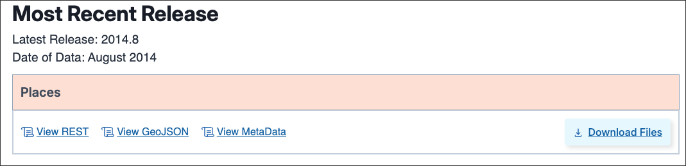
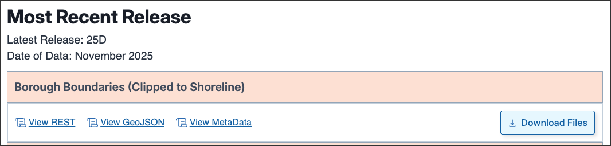
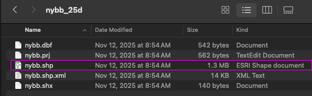
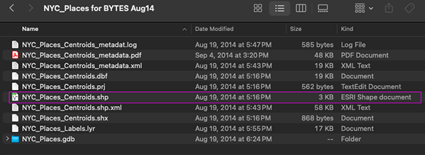
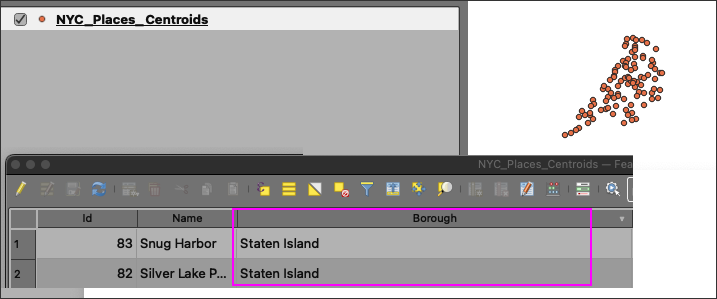
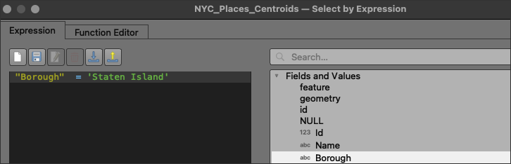
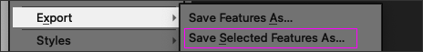
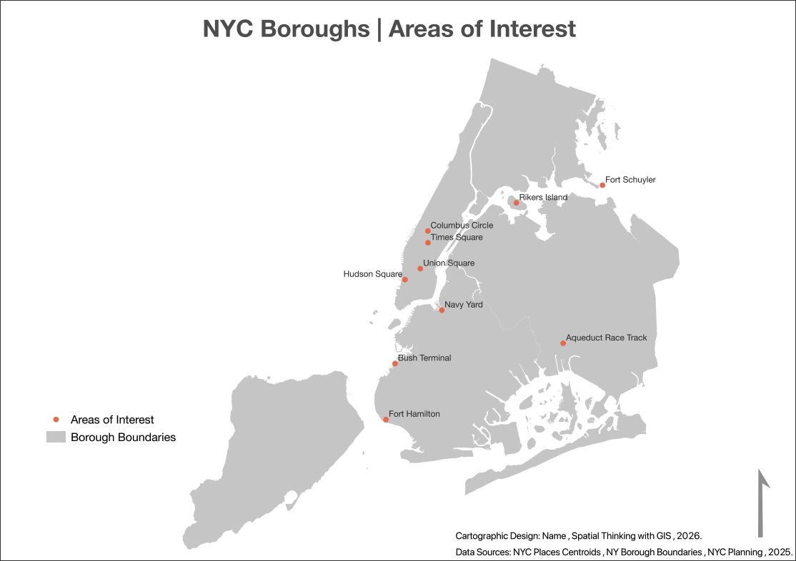
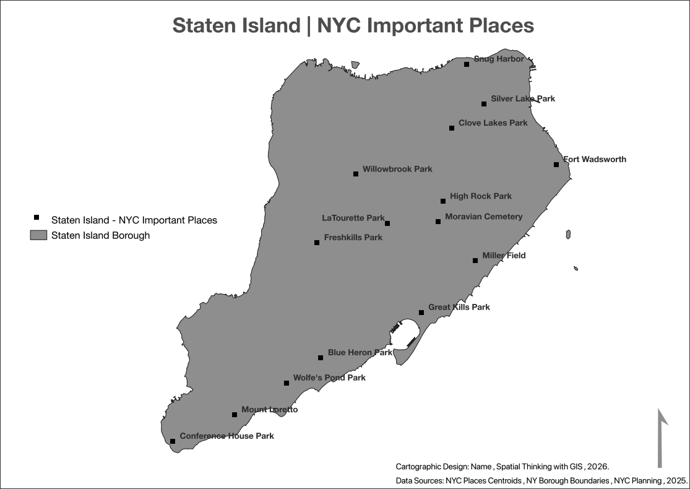

Class 2 Assignment 2: QGIS Orientation & NYC Places Mapping
Spring 2026 | UENV 3200 - CRN 11009 + UURB 3210 - CRN 111008
🧾 Preamble
This assignment introduces core GIS workflows using QGIS and authoritative NYC Department of City Planning datasets. You will work at a large urban scale, focusing on New York City as a multi-borough region.
The goals of this assignment are to:
- Become oriented to the QGIS interface
- Load, inspect, and manage vector datasets
- Perform attribute-based feature selection
- Make intentional cartographic decisions
- Produce a clear, legible NYC-focused map exported to PDF
🗓️ Week Context | Class 2
This assignment aligns with:
- Class 2 Lecture
- Class 2 Demonstration Lab
- Class 2 discussion of core cartography principles, scale, and attribute-based feature selection fundamentals
Complete the Demonstration Lab before beginning this assignment.
Before proceeding to your work on the first assignment, pause and watch the Lecture recording. In addition to Class 1 & 2 fundamentals, both terminology and some software items are discussed. Disregard ‘Class 1’ title; this is indeed designed for this week, Class 2.
General Course Orientation Items for Class 2 | Assignment 2
Class 2 Reading:
This week’s readings include 2 texts:
Kevin Lynch | The Image of the City
-PDF Page 40-50, three sections that include Nodes, Landmarks and Element Interrelations
-
- Only read the following sections - Vector Data Models, Geometries, Lines, Polygons
🗂️ Assignment Data (NYC Planning)
For the preparation of Assignment 2, utilize the following datasets from NYC Department of City Planning:
Places (Points)

A curated dataset of named places across NYC (e.g., parks, cemeteries, airports), designed primarily for cartographic representation.
Borough Boundaries (Polygons - Clipped to Shoreline)

CRS note:
Both datasets are typically distributed in
NAD83 / New York Long Island (ftUS) — EPSG:2263
Check that the project CRS is indeed snapped to EPSG:2263.


In the preview images above, note the .shp files; these are the primary files that you will point QGIS to when you load the feature. Many of the other files in the feature directories are known as ‘side-car’ files or ‘helper’ files; they do attendant tasks, but are not necessarily vital to the geographic feature itself.
🧰 Part I — Project setup & data loading
Create a clearly named assignment folder, for example:
- assignment_02_nyc_map/
- data_raw/
- data_qgis/
- exports/
- qgis_project/
- data_raw/
- assignment_02_nyc_map/
Complete downloads noted above:
- NYC Places dataset
- NYC Borough Boundaries dataset
- NYC Places dataset
Open QGIS, create a new project, and set the Project CRS to EPSG:2263 (this should happen automatically with the first feature load - either places points or borough boundaries.)
Save the project file into
qgis_project/directory (example:assignment_01_nyc_map.qgs).Load both datasets and confirm they align spatially.
🖥️ Part II — QGIS interface orientation
Before performing selections, ensure you are comfortable with:
- Layers panel vs Browser panel
- Opening and reading attribute tables
- Understanding field names and values
- Basic symbology changes
- Saving projects and managing file paths
Tip
Always inspect the attribute tables before selecting features.
🎯 Part III — Selecting features using attributes
Option #1:
Utilize Select Features by Expression to isolate subsets of the Places dataset.
Where this happens in QGIS
- Right-click Places → Open Attribute Table
- Click Select features using an expression (ε)
- Enter an expression and apply the selection
Example expression 1 — Select one borough
Use the following expression template to select all places located in one borough:
- Example for Staten Island Borough:
"Borough" = 'Staten Island'
Alternatively, replace 'Staten Island' with one of:
- Manhattan
- Brooklyn
- Queens
- Bronx

Borough attribute in the attribute table
Option #2:
Example expression 2 — Select one place type (citywide)
Use the following expression to select one place type across all five boroughs:
"TYPE" = 'Park'
Alternatively, replace 'Park' with another valid place type found in the attribute table.
Saving your selections
After selecting features:
- Right-click Places → Export → Save Selected Features As…
- Format: Shapefile (.shp)
- Save to
data_qgis/
- Use clear names such as:
- places_selected_borough.shp
- places_selected_type.shp
- places_selected_borough.shp

🗺️ Part IV — Mapping options (choose one)
Choose one mapping strategy:
Option A — One place type across all five boroughs
- One place type (e.g., parks)
- All five boroughs as base geography
- Emphasis on citywide spatial pattern
Option B — One borough with multiple place types
- One borough
- Multiple place types within that borough
- Emphasis on intra-borough diversity
If Option B becomes visually dense, reduce the number of place types.
🖨️ Part V — Cartographic output
Create a single-page map using Print Layout.
Required elements
- Borough boundary or boundaries
- Places Points Features w/ labels
- Title
- Legend (minimal)
- Author name, course, date
Export
- Page size: 8.5 × 11 inches
- Orientation: portrait or landscape
- Format: PDF
- Save to
exports/
📦 Submission
Submit:
- One PDF map
- Short comment section at Canvas Submission (3–5 bullets) explaining:
- Option chosen (A or B)
- Selection logic
- One intentional cartographic decision
- Option chosen (A or B)
📐 Video Resource for QGIS Map Layout (utilizing global dataset from Demonstration Lab 2)
- Utilize the following video guide along with the following steps to create, design and finalize your map deliverable:

📁 Submission Examples
Option A Example:

Option B Example:

🧮 Grading Rubric — Assignment 2
| Criteria | Excellent (100) | Good (90) | Needs Work (80) |
|---|---|---|---|
| Data & CRS Handling (20%) | Correct datasets used; CRS handled properly; layers align as expected | Minor CRS or layer issues | Misaligned layers or incorrect CRS |
| Feature Selection (25%) | Clear, intentional selections that directly support the map’s goal | Basic but workable selection logic | Selection unclear, arbitrary, or incorrect |
| Cartographic Design (30%) | Strong visual hierarchy; legible symbology; appropriate scale decisions | Functional but visually weak or inconsistent | Cluttered, hard to read, poor scale decisions |
| Required Map Elements (15%) | All required elements present and well integrated | One element weak or missing | Multiple required elements missing |
| Conceptual Clarity (10%) | Map communicates a clear NYC-focused idea | Purpose present but underdeveloped | Map intent unclear |
Total: 100 points